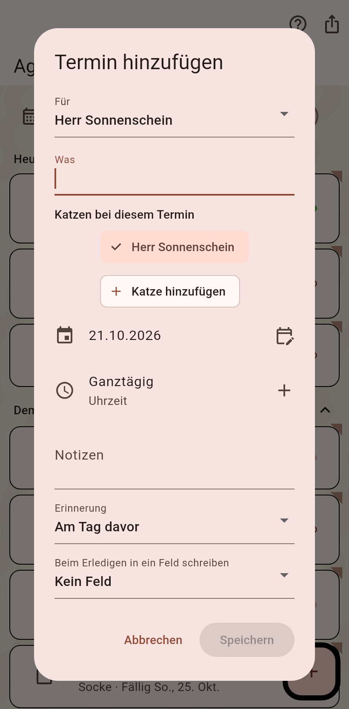
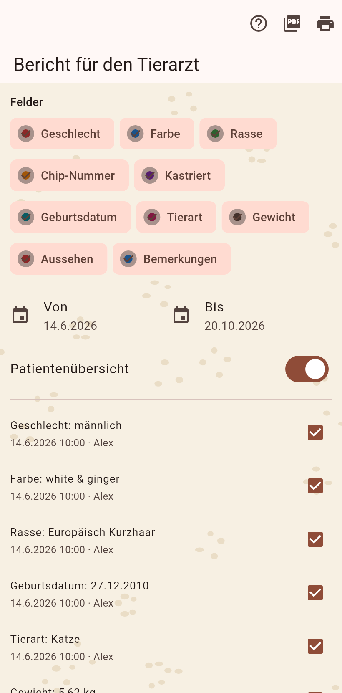

1. Der Termin
Aus dem Plus der Agenda: für wen, was, Tag und Uhrzeit, eine Notiz, und die Erinnerung am Tag davor. Mehrere Katzen machen daraus eine Tierarztfahrt. Speichern.

2. Der Bericht
Vor dem Besuch der Tierarztbericht von der Seite der Katze: die Felder und Daten deiner Wahl, die Patientenübersicht, eine Kurve pro Zahl. Als PDF teilen oder drucken. Danach schließt das Kästchen auf der Agenda den Termin ab und kann einen Wert in ein Feld schreiben.
